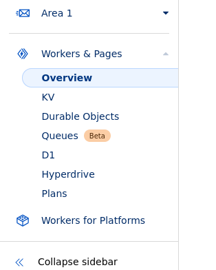

Sign up for your own account at
https://github.com so you can "fork"
(create a copy of) this site.
Next, visit both
https://github.com/lemons-n-limes/site-links
and
https://github.com/lemons-n-limes/main-site
and press the "Fork" button on both.
After creating your own copy, go to your own repositories and edit the one
named "site-links". You can click on the file named index.html and then
the pencil icon in the top right to change its contents. You can add
custom links to it if you desire, or use it as default.
Next, visit
https://pages.cloudflare.com/
and make a free account. Then, on the left bar select "Workers and Pages"
and then "Overview".

Click "Create", then "Pages", then "Connect to Git". Add your GitHub
account and then select site-links. Give it a custom name, and then click
"Save and Deploy".
After waiting a minute or two to deploy to the Cloudflare servers and
eventually the internet, go to the URL and check if it visible. If you
receive any error messages, use Google to try understand them.
Go back to https://github.com and to your
repository called "main-site". Go to the file at src/components/nav.jsx
Near the top of the file, there should be a link called
"https://your.custom.page/here". Replace it with the name of your
cloudflare site. Save your changes.
Next, visit and sign up to
https://www.koyeb.com/ and go to the
"Apps" tab. Click "Create App" and connect your GitHub account to it.
Then, select the "main-site" repository, give it a permanent name, and
then deploy it to Koyeb. Wait for any loading to finish, and it should
deploy without any errors. You should be able to visit the site now in
your web browser, and it should load the site you are familiar with!
If you want to embed the website into a file, enter File Explorer, click
the View tab at the top, and check the box named "Show File Extensions".
Right click in an empty folder and select Create Blank Text Document. Name
it YOURNAMEHERE.html
Save it and open it in Notepad or another text editor. Copy and paste the
following into the file.
Follow the link and copy the text
Make sure to change "https://galaxy.lag.tf" on the 29th line to the name
of your site hosted on Koyeb. You should now be able to open the file in a
Web Browser such as Microsoft Edge and it will embed your site into it.
You should be able to take it from here, Good Luck!